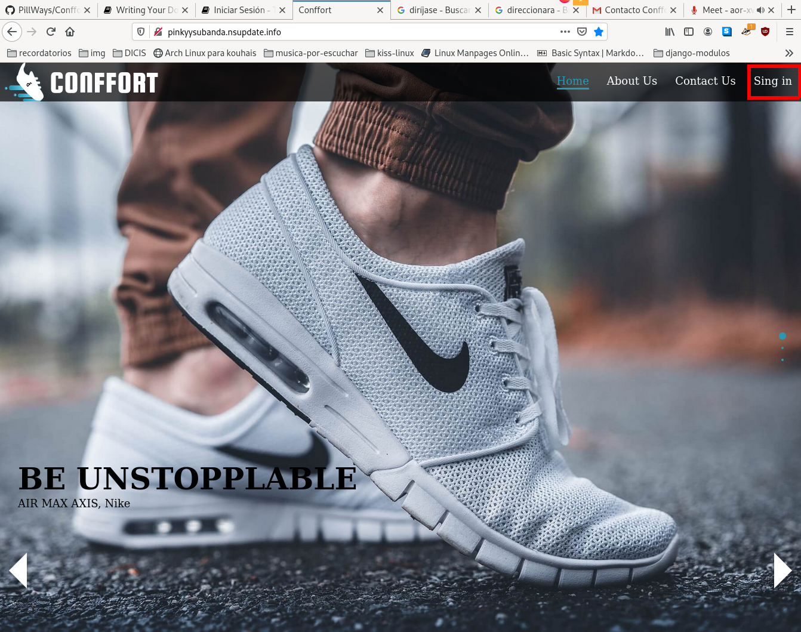
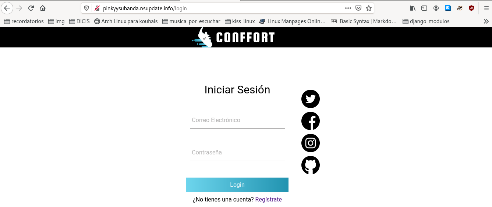
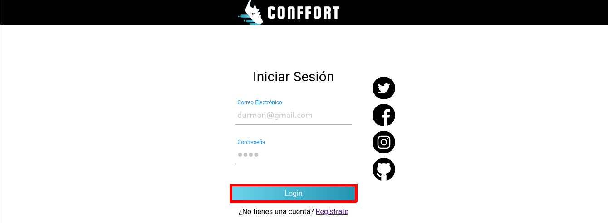
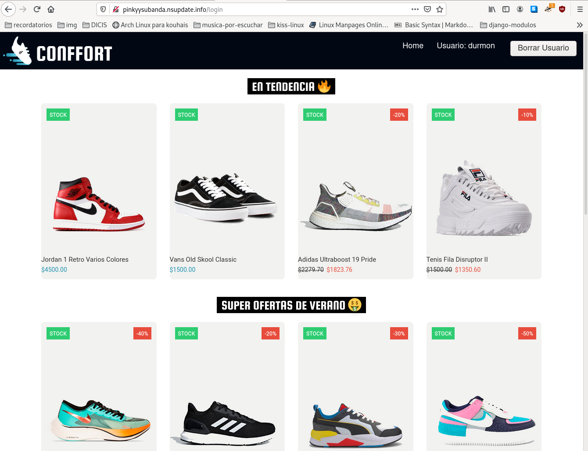

Servicio de inicio de sesión para los usuarios
Consideraciones
- Para iniciar sesión dentro del sitio web es necesario ser un usuario registrado.
- El inicio de sesión permite visualizar el catalogo de productos que ofrece el sitio web.
Iniciar sesión
- Sobre la barra de navegación ubicado en la parte superior, haga click sobre la pestaña Sing in, el cual automáticamente lo va a dirigir a la página inicio de sesión.

- Automáticamente el sitio lo ubicará en la página de iniciar sesión, y mostrara un formulario. Ingrese en el recuadro superior el correo electrónico que el cliente a utilizado para registrarse y en recuadro de la parte inferior la contraseña utilizada en el registro. Completado el formulario haga click sobre el botón Login.


- Cada usuario registrado, al iniciar sesión dentro del sitio, puede visualizar el catalogo de productos, en la barra de navegación ubicado en la parte superior se encuentran tres apartados, el apartado Home dirige automáticamente a la página de inicio del sitio web, el segundo apartado Usuario muestra el nombre de usuario que ha iniciado sesión y por último, el tercer apartado Borrar Usuario elimina por completo la cuenta del cliente y dirige automáticamente a la página de inicio del sitio web.
